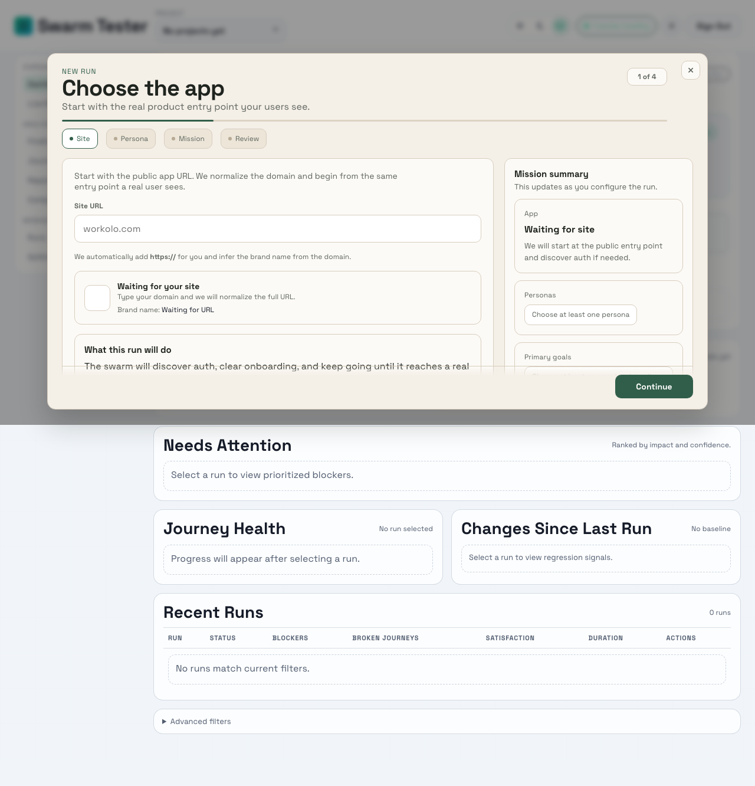
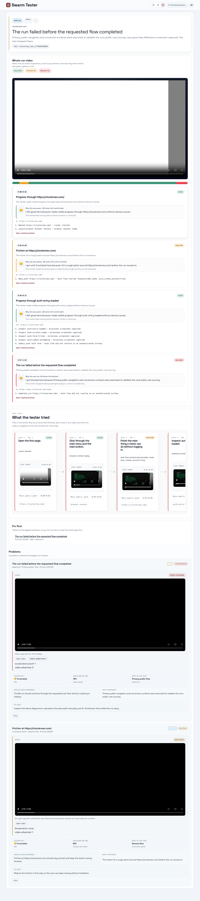

Live now
AI Agents That Break Your App Before Users Do
Run real AI QA on React apps, Next.js products, auth flows, dashboards, and mobile web journeys.
Launch browser agents, review video-backed bug reports, and schedule recurring checks that alert your team when something breaks.
Trusted by fast-moving product teams
Watch a QA agent work
BHuman, ClusterSEO, and Workolo being tested in one slower reel with reactions, friction notes, and blocker capture.
Open dashboard

Configure the mission
Choose the app, persona, and goal.

Review the evidence
Open a detailed report with clips, logs, and steps.
Trusted by developers shipping with the stack they already use
GitHub
Vercel
Slack
Jira
Playwright
Try the swarm
Queue a real QA run.
Paste a public URL and your work email. We will run the real browser-backed QA, record the flow, and email the finished report when it is ready.
We will email the finished report and share link when the run completes.
Real QA queue
Browser-backed run + report delivery
[SWARM-01] Enter a public site and work email to queue a real QA run…
Run queued
We will email the finished report once the run is done.
Open live report
Everything you need to ship with confidence
Real runs, readable reports, and recurring monitoring built to help engineering move from evidence to fix quickly.
Bug detection with evidence
Agents catch the failure, save the video, and pin the report to the exact step where progress stopped.
Actionable analysis
Reports explain what happened in plain English and generate a concrete fix prompt for the AI dev working on the feature.
Persona-driven QA
Run the same product through different user lenses so you see where beginners stall and where power users get slowed down.
Recurring checks and alerts
Schedule regular QA runs, route findings into your workflow, and let the product tell your team when something regresses.
From zero to a report your team can use
The setup is short, the run is real, and the result is evidence you can hand straight to engineering.
Point at the app
Set the real entry URL your users see.
Define the mission
Choose the persona and the outcome the run must reach.
Launch the run
Browser agents explore the product, not a mocked flow.
Review what broke
Share a report with clips, logs, and fix-ready summaries.
Start running QA today
Point Swarm Tester at your app, launch a run, and get shareable reports with evidence, recurring checks, and alerts.